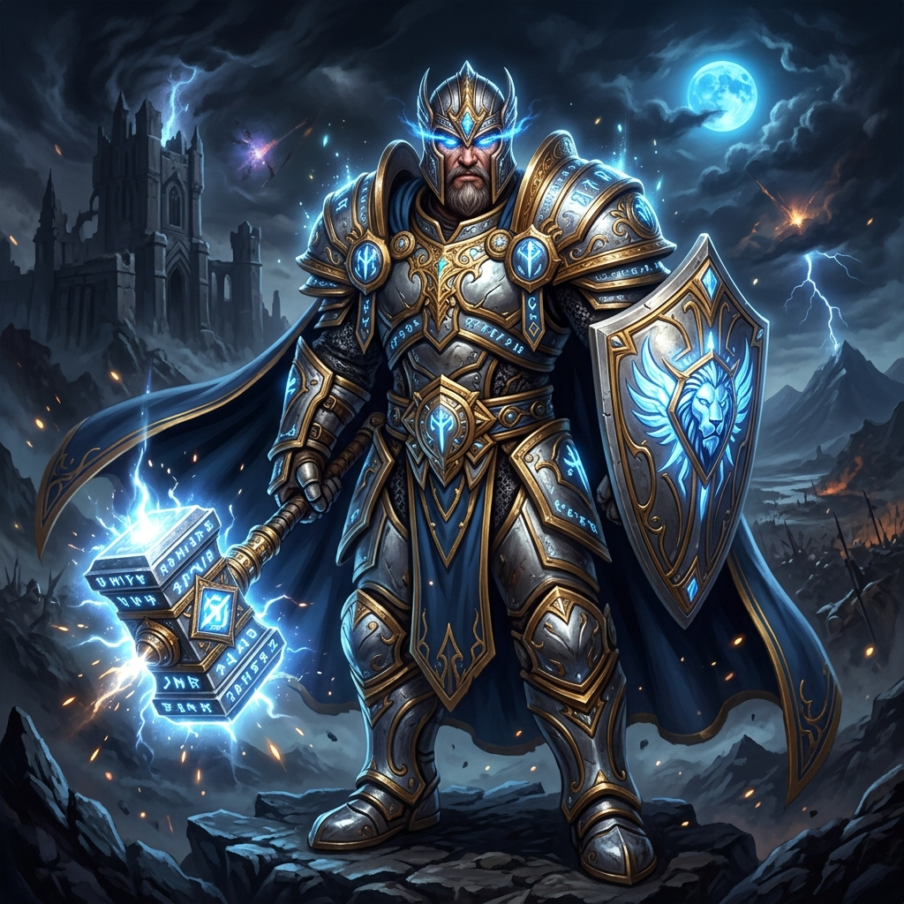
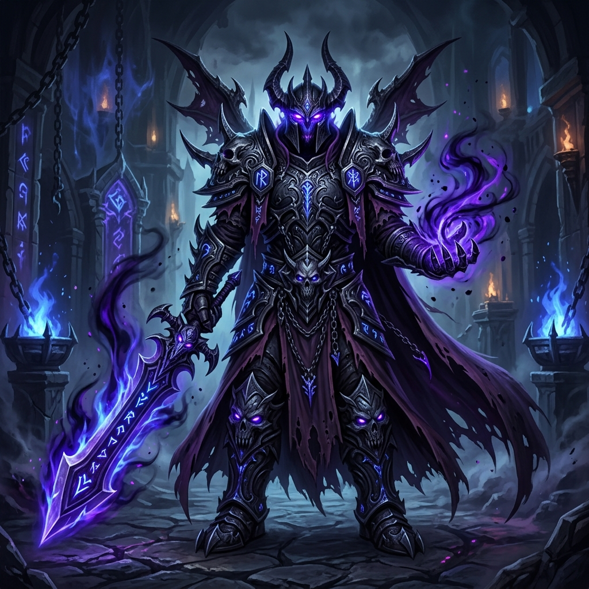
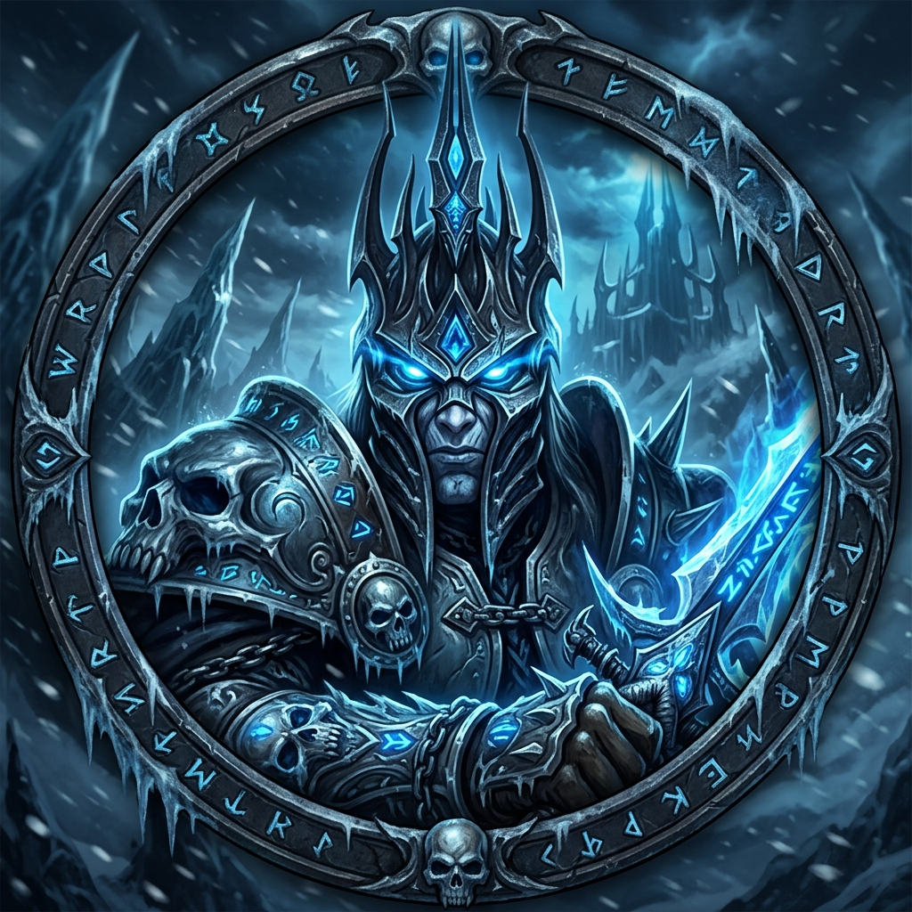
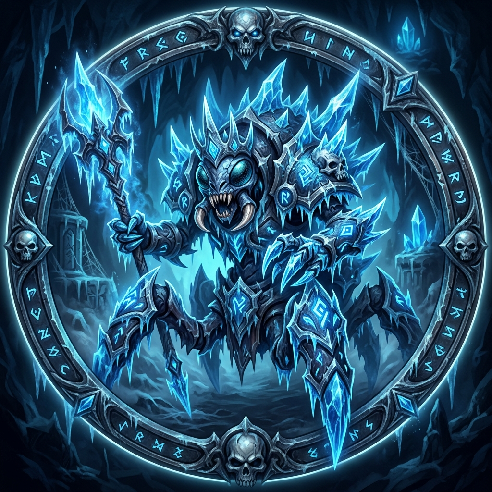
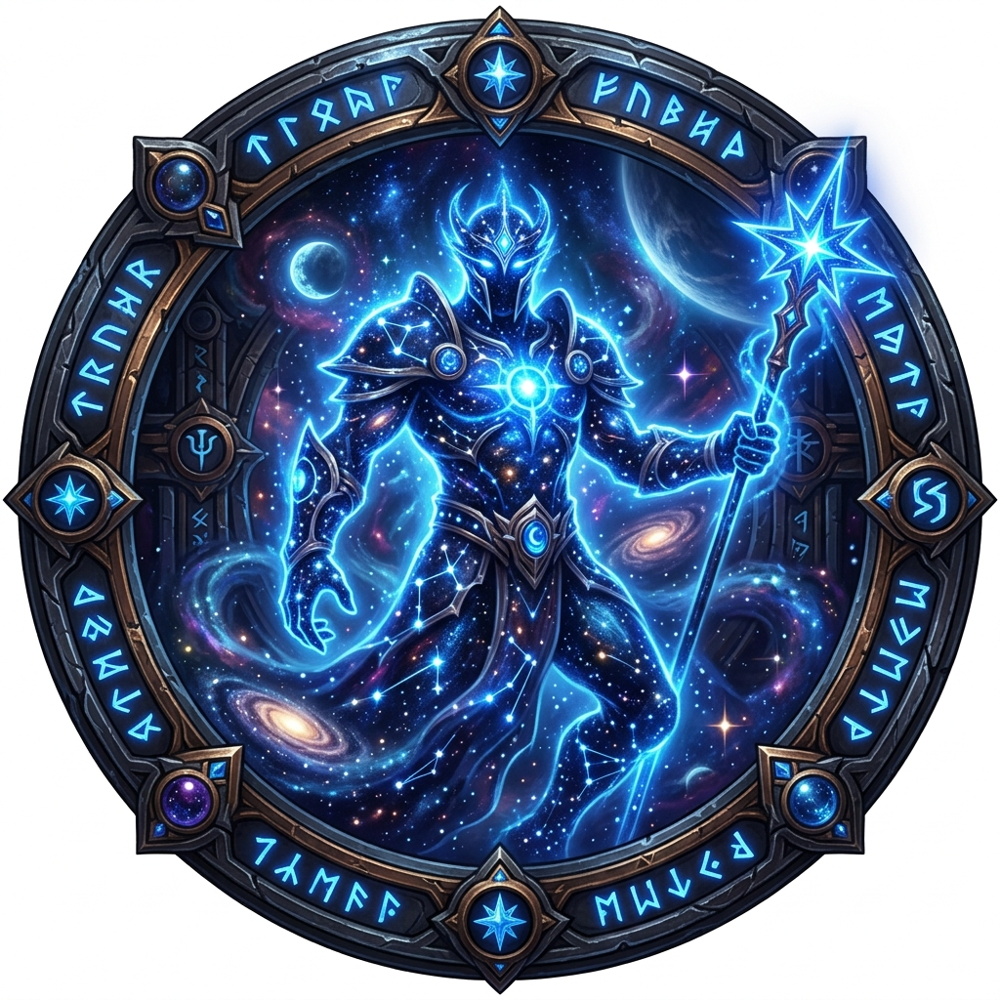

WORLD OF WANOS
EL UNIVERSO FORJADO ENTRE LA ESCARCHA Y EL DESTINO
Los Forjadores del Orden
El Panteón que rige el Universo Wanos desde las sombras de Rasganorte

Bhalanar
Vigilante de la Urdimbre (GM)
Antiguo observador de las Salas de la Creación de Ulduar. Teje los hilos del Universo Wanos desde un plano de orden absoluto.

Morgoroth
Ejecutor de la Justicia Glacial (Co-GM)
Comandante veterano de la Espada de Ébano. Bajo su mando, los guerreros entran en la Fase de Frenesí, liberando un poder incontenible.
La Jerarquía del Panteón
El orden inmutable que sostiene el Universo Wanos
Autoridad máxima. Su palabra es ley en el Universo Wanos.
Mano derecha del Vigilante. Ejecuta la justicia glacial sin piedad.
Elegidos por su maestría táctica. Lideran las expediciones contra la Plaga.
Guerreros probados que han superado las pruebas del Panteón.
Nuevos reclutas forjando su camino hacia la eternidad.
Las Crónicas de la Conquista
Estado de las campañas contra la Plaga y sus aliados

Rey Exánime
Arthas Menethil aguarda en el Trono Helado. El destino del Universo Wanos depende de su caída.
⚔ OBJETIVO PRIMORDIAL
Anub'arak
El Rey Araña fue desterrado por el filo del Panteón. Su armadura quedó como trofeo.
✓ ERRADICADO
Algalon
El Observador fue recalibrado. Bhalanar le convenció de no borrar Azeroth del universo.
✓ RECALIBRADOLínea de la Campaña
Ventanales del Vacío
Las Crónicas en Vivo del Panteón — Fase de Frenesí Activa
Buscamos Virtuosos, no Mercenarios
El Panteón convoca almas de valor. ¿Responderás al llamado?
¿Cansado de la frialdad en UltimoWoW? Únete a nosotros en el Nexo de Almas para forjar tu destino. Bhalanar y Morgoroth valoran la lealtad absoluta sobre el Gear Score.
"— Morgoroth, Gran Ejecutor del Panteón
Dirígete al canal #reclutamiento en el Discord del Panteón
Los Pilares de la Fe Wana
Los principios inquebrantables del Universo Wanos
Manual de Estrategia
"En la ignorancia nace el wipe; en la enseñanza, la victoria eterna."
- Asistencia a raids obligatoria con aviso previo
- Estudiá los encounters antes de la incursión
- Discord activo durante raids
Código de Acero
"El veneno de la toxicidad será purgado por el filo de la hermandad."
- Cero tolerancia con la toxicidad
- Respeto absoluto entre compañeros
- Los conflictos se resuelven con Bhalanar
Unión de Azeroth
"Un solo guerrero cae, un Universo entero lo levanta."
- Ayuda mutua en progeo de personaje
- Banco de hermandad abierto a Custodios+
- La hermandad por encima del GS
El Reloj de la Eternidad
Los Vigilantes dictan preparación. Afilen el acero.
La Forja de Sabiduría Wana
Sentencias del Panteón para cada arquetipo de combate
Ofrendas para la Hermandad
Las expediciones de recolección forjan el poder colectivo del Panteón
Recolección
Minería, herbología y desencantamiento para el banco de hermandad.
Custodios+Artesanía
Herrería épica, confección y orfebrería para equipar al Panteón.
Heraldos+Carreras Rápidas
ICC 10/25 heroico. Turnos de geneo para los Iniciados bienvenidos.
Todas las rangos